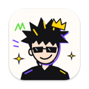
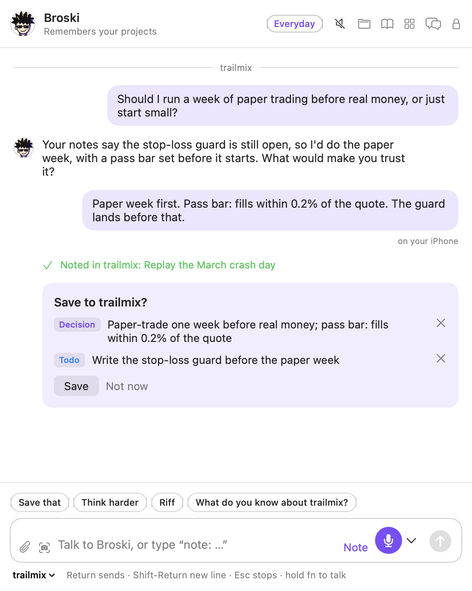
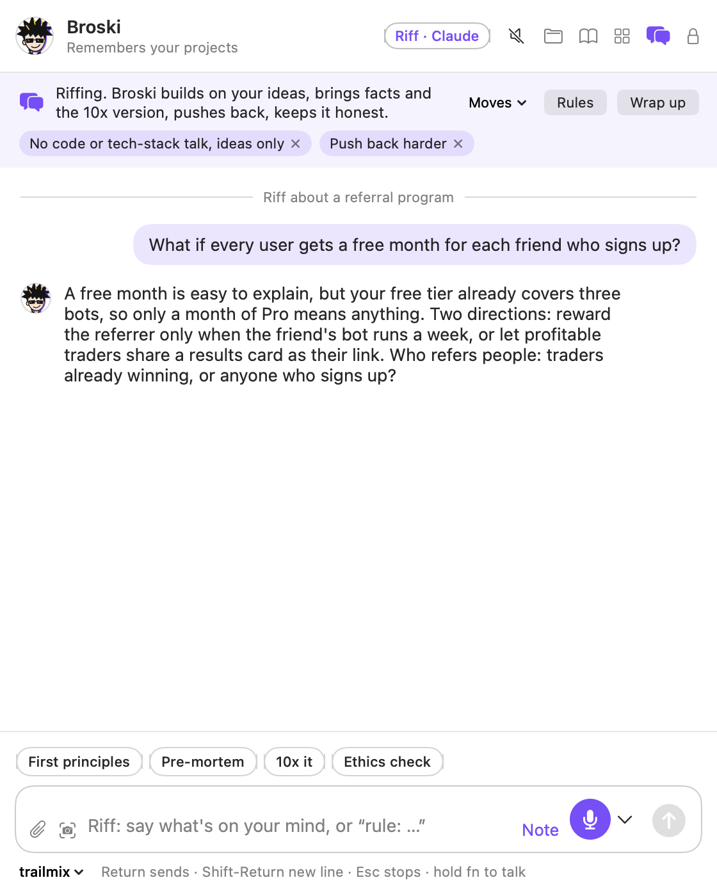
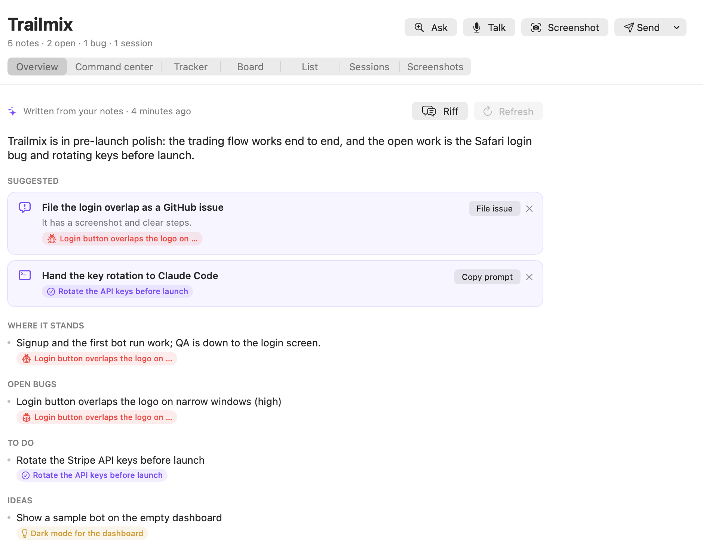
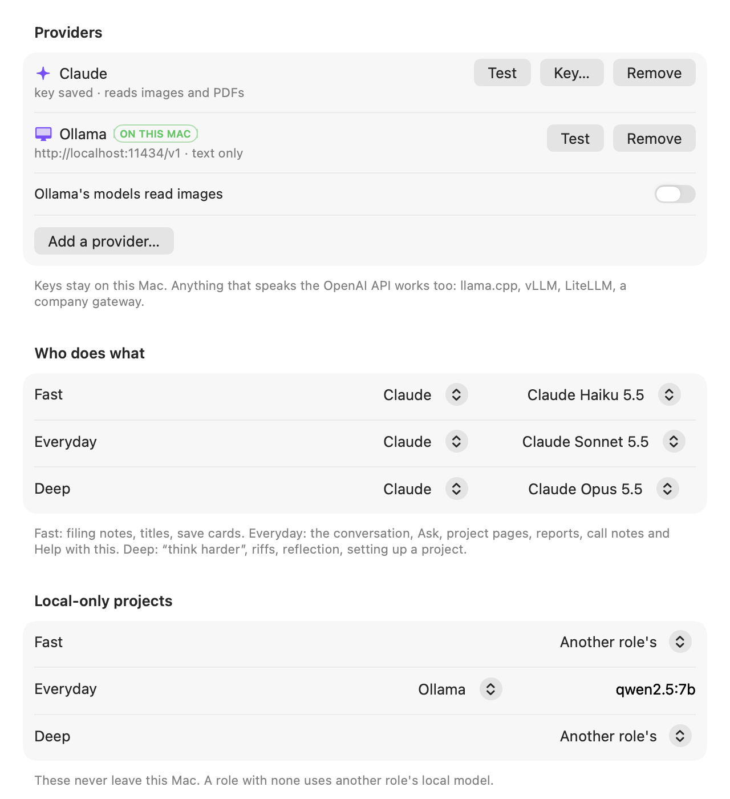
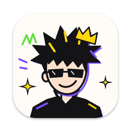

Broski for Mac and iPhone
Talk about your projects. Broski remembers.
Press Option Shift B or hold fn, then talk or type: Broski remembers what you've told it and thinks with you. Decisions and todos are saved only when you tap Save, as plain files you own.

What it does
One conversation for all your projects
Broski keeps the thread across days and devices, recalls what you decided, and turns what matters into notes, but only when you say so.
-
Talk or type
Press Option Shift B, or hold fn in any app and speak. Bark and Whisper turn speech into text on your Mac, and pausing to think is fine.
-
It remembers you
It recalls your notes, past conversations and each project's decisions, and says where it got them. Read what it knows about you, and undo any change.
-
Riff mode
Think out loud. Broski builds on the idea, pushes back and asks one question at a time. Wrap up turns the riff into one note.
-
Saves only when you tap
When you decide something or name a task, Broski offers a card. Nothing is saved until you tap Save.
-
Every project in one place
A dashboard of every project, a living page for each, and its tracker read where it lives. Broski never writes to a project's tracker.
-
Your notes in Claude Code
Broski's MCP server lets Claude Code and other MCP clients search your notes, project pages and trackers. It never edits a note.
-
On your iPhone too
The Talk tab carries the same conversation, synced through iCloud Drive. Bark transcribes on the phone as well.
-
A private vault
Notes encrypted on your device with AES-256-GCM, opened only by your passphrase or recovery key. No model ever reads them.
Riff mode
Think out loud, then keep one note
Say “let's riff about…” and Broski brainstorms with you on your deep model. It builds on the idea first, brings real facts and says how sure it is, and pushes back when something won't hold.
- Thinking moves when you want them: first principles, pre-mortem, invert, steelman, the 10x version.
- Your rules stick. Say “rule: no code talk” and every riff keeps it.
- Wrap up gives you one card: the summary, ideas, decisions, todos and open questions.

Dashboard
Every project, one dashboard
Each project gets a living page: where it stands, open bugs, todos, ideas, decisions and open questions, with every line linked to the note it came from.
- Trackers are read in place, never copied and never written to.
- Ask Broski (Option Shift A) answers “what's waiting on me?” across projects, with sources.
- A board and a list for each project, with search and filters across everything.

Any model
Pick the model for each job
Broski isn't tied to one AI company. Each job has a role, and you choose the model for each one.
- Fast
- Titles, tags and save suggestions
- Everyday
- The conversation and Ask
- Deep
- Riffs, reflection and new projects
Works with
- Claude
- OpenAI
- Google Gemini
- OpenRouter
- Groq
- Mistral
- DeepSeek
- Ollama, on your Mac
- LM Studio, on your Mac
- Apple's on-device model, on your Mac
- Any OpenAI-compatible server
- Keys stay on your device.
- Projects marked local only use only models on your device.
- See this month's spend by model, and set a daily limit.

Privacy
Your notes stay yours
Broski is an app on your devices and a folder of plain files. There's no account, no telemetry and no Broski server.
-
Files you own
Markdown and JSON in a folder you pick: iCloud Drive to sync with your iPhone, Dropbox, a Git repo, or ~/Broski.
-
Nothing to sign up for
No account, no analytics, and no Broski server to send anything to. Broski runs on your Mac and iPhone, and nowhere else.
-
Secrets masked
Every request goes through one gateway, which masks keys and tokens before anything reaches a model.
-
Local-only projects
Mark a project local only and its notes go only to models on your device. If none is set up, Broski says so instead.
-
A private vault
AES-256-GCM on your device, with a passphrase and a one-time recovery key. No model, search or memory reads it.
-
Mic off until you ask
Hold to talk and let go when you're done. The optional wake word runs only with on-device recognition.
Get started
Three steps to your first conversation
-
Download and open
Drag Broski into Applications and open it. The first time, macOS asks you to confirm it; the FAQ shows how.
-
Choose your AI
Paste a key for Claude or another provider, or pick a model on your Mac: Ollama, LM Studio or Apple's on-device model.
-
Press Option Shift B and talk
Broski starts by getting to know you: what to call you, what you're working on, and how you like answers.
For developers
Built carefully, in the open
Broski holds people's thinking, so every change has to earn its place.
-
Open source
Apache 2.0. Native Swift on the Mac and iPhone, with one shared core you can read end to end.
-
Written test-first
Every change starts with a failing test, and every bug fix with a test that reproduces the bug.
-
Checked on every push
CI runs the full test suite, a secret scan and an off-screen check of the real chat views.
-
Guardrails for AI agents
AGENTS.md and the repo's hooks stop coding agents from skipping tests, force-pushing, or touching your real notes without asking.
$ scripts/ci.sh --ios
== Secret scan
== Guardrails (agent and git hooks)
== Build
== Unit tests
== Self-tests
== Chat check (the real message box and conversation, off screen)
== iPhone app (unsigned)
== All greenscripts/ci.sh.FAQ
Questions
What is Broski?
Broski is a free, open-source companion app for Mac and iPhone that you talk to about your projects. Press a shortcut, talk or type, and it remembers what you've told it, thinks things through with you, and saves decisions, todos and notes as plain files you own, only when you tap Save.
Which AI models does Broski work with?
Any of them. Use Claude, OpenAI, Google Gemini, OpenRouter, Groq, Mistral or DeepSeek with your own key, any OpenAI-compatible server, or a model on your Mac with Ollama, LM Studio or Apple's on-device model. You pick a model for each kind of work (fast, everyday, deep) and can mix providers. Choosing your AI shows how.
Is Broski free?
Yes. Broski is free and open source under the Apache License 2.0. If you use a cloud model, you pay that provider directly for what you use; a model running on your Mac costs nothing. Settings › Models shows this month's spend and lets you set a daily limit.
Does it work offline?
Yes, with a local model (Ollama, LM Studio or Apple's on-device model) and on-device voice (Bark or Whisper). Cloud models and reading links need a connection.
Does Broski send my voice or notes to the cloud?
Only what you choose. Broski never sends audio anywhere itself: Bark and Whisper turn speech into text on your Mac, and Apple's recognizer runs on the device when your language supports it (otherwise Apple's speech service is used). Text goes to the model you choose, after keys and tokens in it are masked, and to webhooks you add. Projects you mark local only use only models on your device, and there's no Broski account or server. Privacy covers exactly what's sent.
Where are my notes?
In a folder you pick, as plain markdown and JSON files: ~/Broski, or iCloud Drive to sync with your iPhone, Dropbox, or a Git repo. They open in any editor, Obsidian included. Uninstall Broski and they stay where they are.
Is there an iPhone app?
Yes, with the same conversation, notes and riffs. For now you build it from source and install it with your own Apple ID. The iPhone guide walks you through it.
Can Claude Code read my Broski notes?
Yes. Broski includes an MCP server, so Claude Code, Claude Desktop or any other MCP client can read your notes, project pages, decisions and trackers. It hides local-only projects, never reads the private vault, and writes only to trackers Broski keeps. Settings › Connections connects Claude Code in one click; Claude Code and MCP has the details.
Why does macOS warn me when I open it?
Broski isn't notarized by Apple yet. Open it once, then go to System Settings › Privacy & Security and click Open Anyway. On macOS 14, right-click Broski in Applications and choose Open instead. You only do this once.
Does it run on Windows or Linux?
No. Broski is a native Mac and iPhone app, written in Swift.

Press Option Shift B and say hello
Free and open source, for Mac and iPhone.